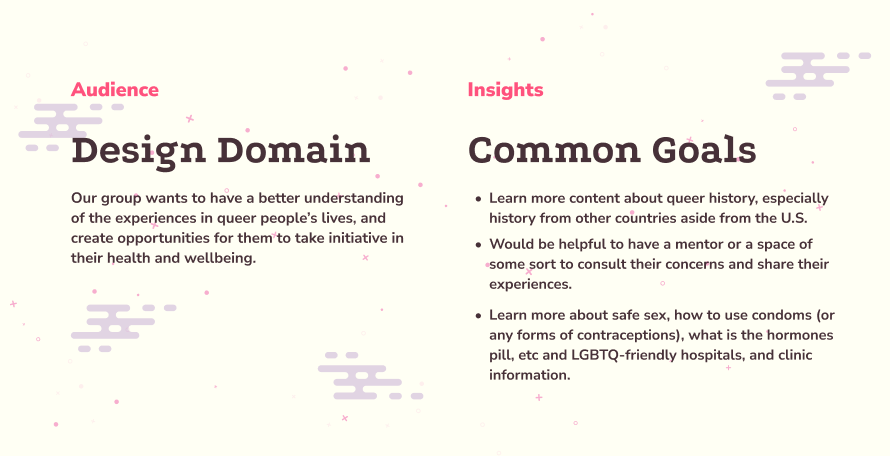

Project Overview
Bye-nary is an interactive narrative mobile application proposal developed for a 3rd year design course, IAT 334: Interface Design.
Bye-nary utilizes game mechanic elements to create a journey for the user into discovering more about 2SLGBTQIA+ terms, vignettes of the experiences of non-binary and trans people in Vancouver, and discover local non-binary/trans businesses and spaces.
Design Domain
While the 2SLGBTQIA+ community have always existed alongside everyone else, many feel that they have a hard time finding a places they felt included. Studies show that 25% of non-binary people did not have access to in-person spaces specific for them (J. Navarro, 2021), many feel that they lack the space where they can learn about their own community, and sex education in school is largely unsuccessful especially for those who are part of the community, as many queer individuals feel they still don’t have the language to articulate themselves and express their gender identity.
Research Process
Research Methodology
One of my main roles in this project is UX Researcher. My research methodology consisted of both primary and secondary research. For my primary research methodology, I conducted 6 interviews via Zoom with queer individuals - 3 bisexual people (one of whom identifies as nonbinary as well), 2 gay men, and 1 trans femme - and listening to their stories of coming out, exploring their gender expression, hardships, and achievements. For my secondary research methodology, I sought out academic journals for quantitative data to understand the scope of the issues that queer people face in modern society.
Key Insights

Framing Our Design Approach
Taking insights gained from our research, we decided to focus on non-binary and trans people within the queer community. We realized that the 2SLGBTQIA+ community is a very large community, so focusing on non-binary and trans individuals helps us narrow down specific problems to tackle. As a result, we as a team proposed the question:

Our goal is to create an application where users can safely explore what their gender expression and identity means to them by learning more about the language and vignettes of people’s experiences.
User Persona

Design Process
I was in charge of the overall flow of the experience. I worked on sketches, wireframes, and high fidelity designs of the interface until finally prototyping the interactions, which were all done using Figma.
Style Guide

Low Fidelity

High Fidelity

Illustrations
Interactive Prototype
Use fullscreen for better use of prototype.
Challenges
Explore was one of the main features in this application, but it was also the feature that went under the most iteration. Initially, I designed it in a way where the user clicks on questions, similar to an FAQ page, and more information based on that question appears. During user testing, users found this interaction boring, and repetitive, and felt like a lot of the information is only obtained by clicking on those questions.
To solve this issue, I designed an activity similar to webtoons. This solution gives the interface a more interesting layout, making it more visually engaging, and information about the local business is immediately present on the screen. The user can scroll and read through the story, and throughout they can select questions to ask about local business, and even submit their own questions, which Ami responds to. This interaction simulates a conversation more than the previous iteration.
Reflection
This was one of the largest UX/UI projects I have embarked on during my academic career here at Simon Fraser University, and it is one of the projects I am most proud of. Throughout my career as a student, I felt I lacked research skills in UX Design. I was always someone who preferred making things look pretty and didn’t mind much whether it functioned or not. However, I wanted to gain a new skill from this course, so I purposefully focused on UX Research during this project. I am proud of the research I have done and the methods I chose. Whenever my group and I felt like we ran into a problem, we always referred back to our research and data to help us keep our focus.
Overall, I feel very fulfilled being able to create a fun product that could be potentially be used by those who want to discover more about the non-binary/trans community in Vancouver.
More Related Projects
Web Design/Development
Cats & Coffee
A fictional website for a Cat Cafe, Cats & Coffee, offering services such as coffee beans for purchase and cat adoptions.
VIEW CATS & COFFEE